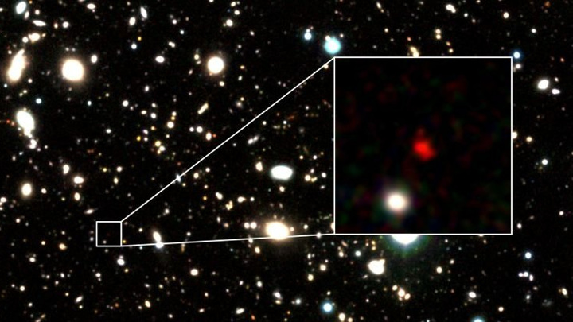
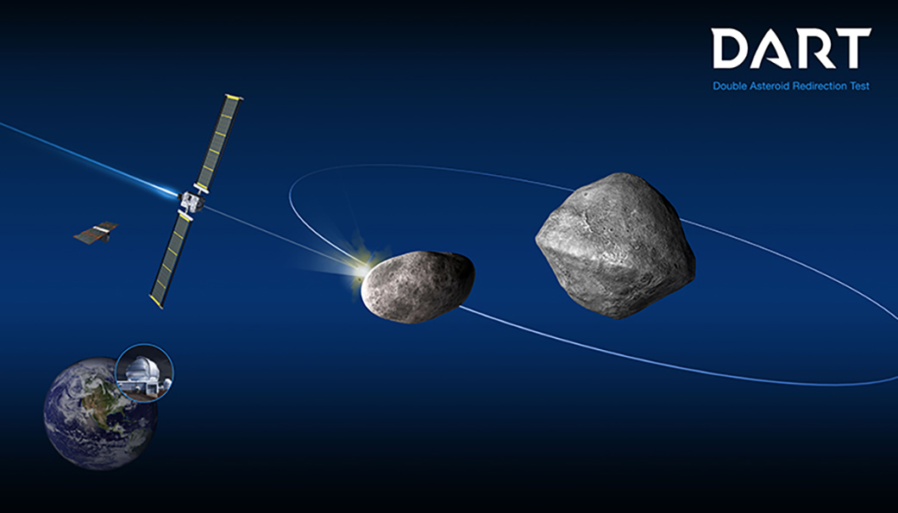
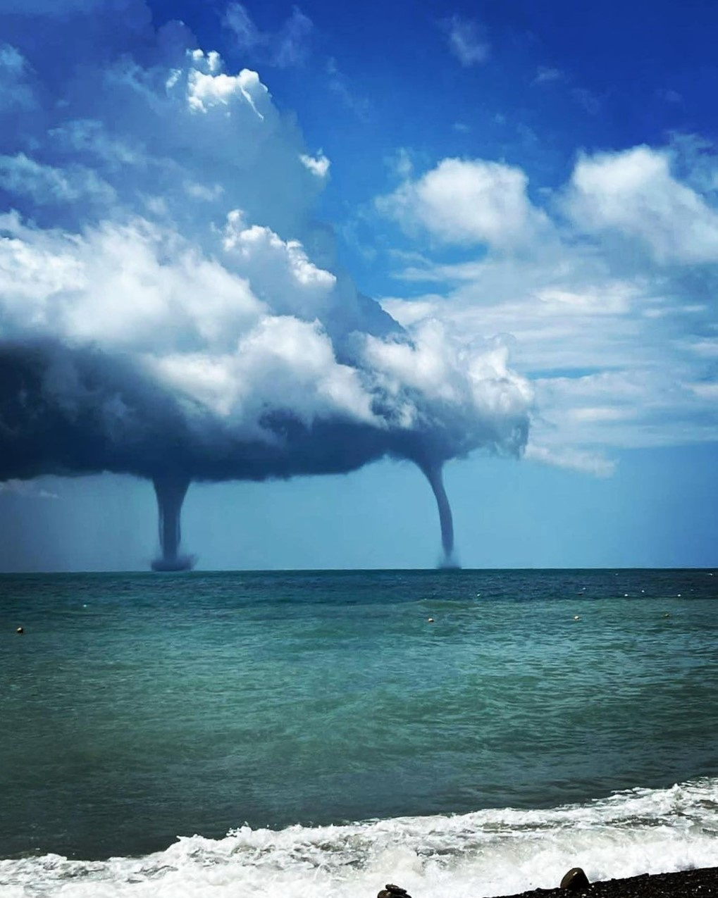
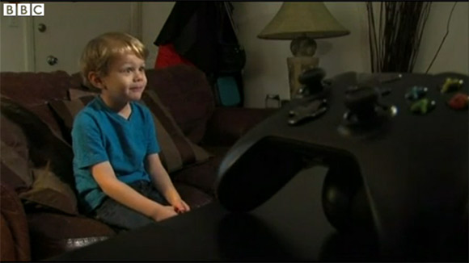

Международная группа астрономов обнаружила самый далёкий астрономический объект. Им оказалась галактика, которой дали название HD1.
Она находится на расстоянии около 13,5 миллиарда световых лет от Земли и могла появиться всего через 300 миллионов лет после Большого взрыва. И слово "всего" здесь более чем уместно.
Как целая галактика успела сформироваться за столь короткий период времени? Что именно представляет собой эта загадочная и столь далёкая космическая структура? Учёные попытались найти ответы на эти вопросы в ходе нового исследования.
Команда предлагает две версии: HD1 может с поразительной скоростью формировать звёзды и, возможно, даже является домом для звёзд населения III: самого первого поколения звёзд во Вселенной, которые до сих пор никогда не наблюдались.
Альтернативная версия заключается в том, что HD1 может содержать сверхмассивную чёрную дыру, масса которой примерно в 100 миллионов раз превышает массу Солнца.
Ответить на вопросы о природе источника излучения, находящегося настолько далеко, не так-то просто. (А на сегодняшний день эта галактика за счёт расширения Вселенной располагается ещё дальше.)
В конечном итоге от учёных требуется длительная аналитическая работа с постепенным исключением неправдоподобных сценариев.
HD1 очень ярко светится в ультрафиолетовом спектре. Это можно объяснить тем, что там происходят какие-то энергетические процессы. А точнее, происходили очень-очень давно — несколько миллиардов лет назад. То, что излучение HD1 только сейчас добралось до нас, вовсе не означает, что галактика ещё жива.

В этом году NASA испытала «космическое оружие», направленное на спасение человечества. Целью миссии DART было проверить возможность изменения траектории астероида, чтобы обезопасить Землю от столкновения. Попытка оказалась удачной. 26 сентября космический корабль DART врезался в Диморф — астероид размером с футбольный стадион, находившийся примерно в 10 млн км от нашей планеты. Через пару недель астрономы использовали наземные телескопы, чтобы изучить изменение его орбиты. Облет астероида по орбите вокруг 65803 Дидим сократился на 32 минуты, что превысило расчеты на 10 минут.
Тщательно организованное столкновение стоимостью 330 млн долларов транслировалось в прямом эфире из оперативного центра миссии в Лаборатории прикладной физики Джона Хопкинса в Мэриленде.
Космический корабль весом около 500 кг не имел на борту взрывчатки. Его «оружием» было его собственное тело и чистая кинетическая энергия. Столкновение произошло на скорости 20 тыс. км/ч.
На данный момент астрономам неизвестны астероиды, которые столкнулись бы с нашей планетой. Однако ученые внимательно следят за 30 тысячами крупных объектов в нашей Солнечной системе. По их оценкам, существуют еще около 15 тыс. астероидов размером более 140 м, ожидающих своего открытия.

В эти выходные в Краснодарском крае установилась дождливая и переменчивая погода. Так, в Геленджике, над акваторией Черного моря, неожиданно появилась туча, из которой образовались два смерча. Это успели заснять туристы.
Природное явление заметили отдыхающие в хуторе Бетта и селе Криница, которые находятся южнее Геленджика. Судя по видео, на улице в тот момент было солнечно. Однако на горизонте над морем зависла большая туча. Прямо под ней можно было заметить темные косые полоски, что говорило о дожде. Также из крайней части этого облака образовался толстый смерч. Затем почти сразу рядом появился другой, чуть тоньше.
Вместе со своим подельником, Дмитрием Смилянцем, нанес ущерб на сумму 200 млн. долларов. Схема была проста: Владимир взламывал сайты мелких магазинов и предприятий, в базе которых хранились платёжные данные клиентов, а Дмитрий вместе с помощниками занимался сбытом краденных кредиток.
Одни из самых низких расценок на рынке кардеров (10$ за карточку американца, 15$ - канадца, и 50$ за карточку из Европы) быстро принесли группировке популярность, что в итоге привело к тому, что в какой-то момент через их руки проходила половина всех ворованных платёжных данных на планете.
Особенно примечательным является то, что на вырученные от киберпреступлений деньги Смилянец долгое время содержал довольно успешные киберспортивные коллективы Moscow Five по Dota 2, CS-GO и другим дисциплинам. Команды всё ещё существуют, но, разумеется, уже за легальные средства.

Кристофер фон Хассель (Kristoffer Von Hassel) — пожалуй, самый юный хакер в истории. Пятилетний мальчик из Сан-Диего нашел способ, как войти в аккаунт своего отца в сервисе Xbox Live в обход стандартной процедуры авторизации.
После ввода неправильного пароля Xbox Live появляется второй экран для подтверждения. Кристофер обнаружил, что если там просто нажать пробел, то можно авторизоваться в системе. «Я боялся, что папа узнает, — сказал паренек в интервью KGTV. — Я думал, что кто-нибудь украдет наш Xbox».
Отец Роберт, по счастливому совпадению, работает в сфере информационной безопасности. Он сразу восхитился достижением сына — и с гордостью отправил отчет в Microsoft. Компания признала наличие уязвимости, исправила ее и даже внесла имя Кристофера в почетный список исследователей безопасности на своем сайте.
Кроме того, Microsoft щедро наградила юного хакера, подарив ему игры на 50 долларов и годичную подписку на Xbox Live.
Кстати, по словам отца, это не первая уязвимость, которую обнаружил ребенок. В возрасте 1 года он уже снимал блокировку экрана на чужом смартфоне, удерживая клавишу Home.